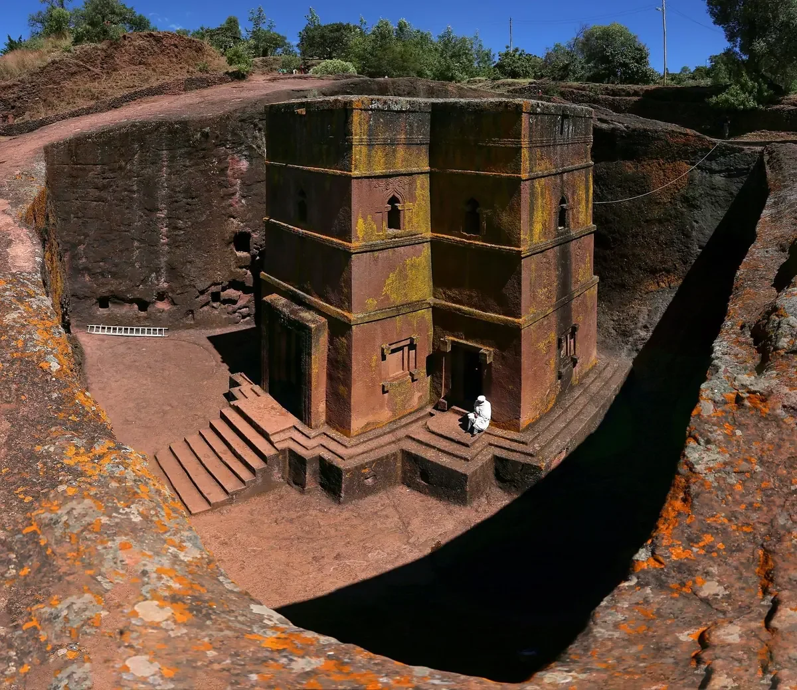
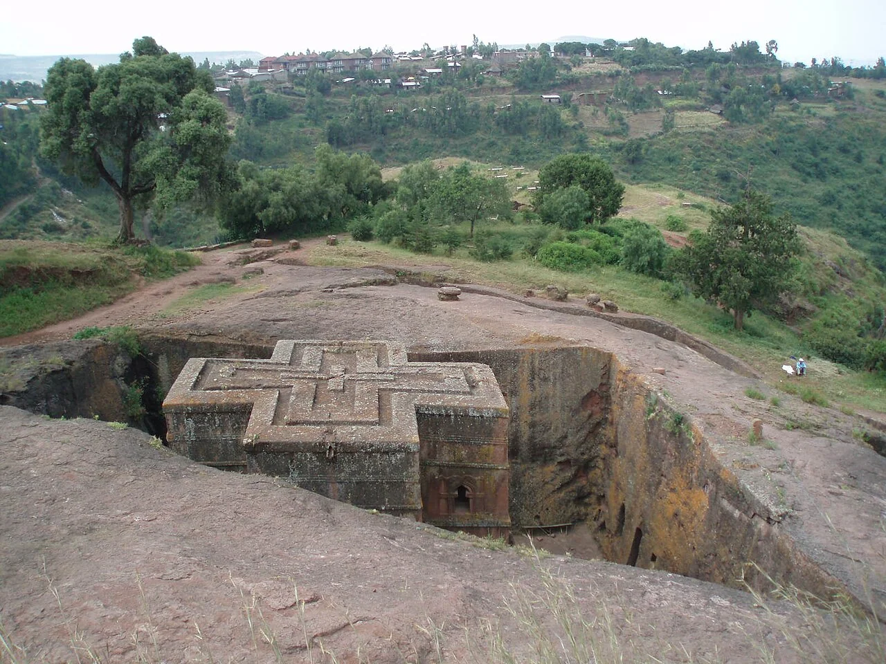
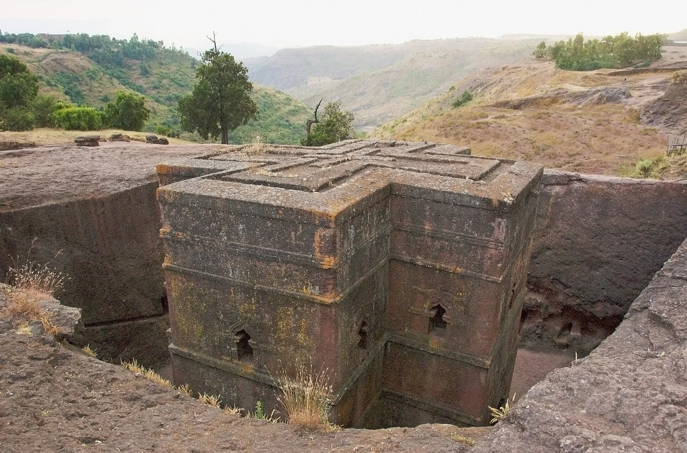
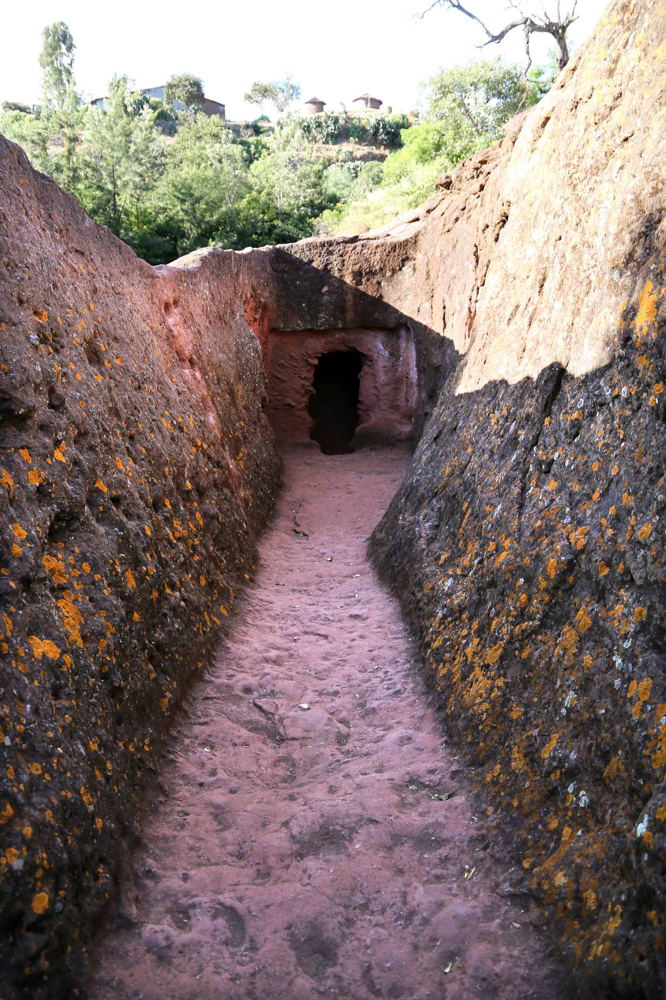
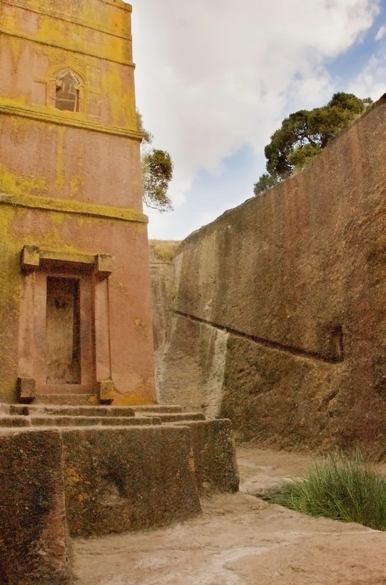

아직 펼치지 않은 카드빛과 돌로 지은 집 · 4랄리벨라 성 기오르기스 교회이 교회는 쌓아 올린 걸까요, 파 내려간 걸까요?이 교회는 벽돌을 쌓아 지었을까, 땅을 파서 만들었을까?
12세기 말~13세기 초랄리벨라 · 에티오피아
랄리벨라 성 기오르기스 교회
에티오피아 랄리벨라의 성 기오르기스 교회는 돌을 쌓아 지은 건물이 아니에요. 붉은 화산암 언덕을 위에서 아래로 깎아 내고, 남은 바위가 그대로 교회가 되었어요. 바위 위에 둘레를 그리는 데서 시작해 한 단계씩 깎아 보세요.
이 교회는 벽돌을 쌓지 않았어. 커다란 바위를 위에서부터 파서 만들었대. 우리도 한 단계씩 파 볼까?
검수 전 시안이에요(기준서 1판). 장면에는 기록에 있는 것만 옮겼고, 기록마다 다른 것은 따로 적었어요. 상상은 ‘눈 감고 상상해 보기’에만 썼어요.
시안 확인용카드 단계 미리 보기
1
땅에 박힌 십자가
바위 언덕 위에 서면 발아래 네모난 구덩이가 보여요. 그 한가운데 십자가 모양 지붕이 둘레 바위와 거의 같은 높이에 있어요.
구덩이는 깊이가 약 11m예요(월드 아키올로지). 둘레 마당은 가로세로 약 22m이고, 교회는 그 바닥에서 계단처럼 층진 단 위에 서 있어요(BAS).

랄리벨라에는 바위를 깎은 교회가 열한 곳 있어요(유네스코). 성 기오르기스는 다른 교회 무리에서 서쪽으로 떨어져 있어요(메트로폴리탄 미술관). 그래도 도랑으로 다른 교회들과 이어져 있어요(유네스코).
랄리벨라는 12세기부터 신앙의 자리이자 순례지였고, 오늘날 ‘새 예루살렘’으로 여겨져요(메트로폴리탄 미술관).
땅속에 커다란 십자가가 박혀 있어! 저게 교회 지붕이래.
물어보기위에서 보면 무슨 모양이야?
2
천사들이 일한 밤
랄리벨라는 이 마을의 이름이자 왕의 이름이에요. 본디 로하라 불리던 마을은, 랄리벨라 왕이 세상을 떠난 뒤 곧 왕의 이름으로 불리게 되었어요(메트로폴리탄 미술관).
왕의 성인전(거룩한 사람으로 받드는 이의 삶을 적은 글)에는 왕이 천사들의 도움을 받아 24년 동안 교회들을 깎았다고 적혀 있어요(메트로폴리탄 미술관).
교회 전승은 일꾼들이 연장을 내려놓은 밤이면 천사들이 와서 사람보다 두 배 빠르게 일했다고 전해요(월드 아키올로지).

“이 건물들에 대해 더 쓰기가 지쳐요. 더 쓰면 사람들이 내 말을 믿지 않을 것 같아서요.”
포르투갈 사제 프란시스쿠 알바르스, 1521년 랄리벨라를 다녀가 교회 열 곳을 자세히 적은 글의 끝(게르버스 논문의 영어 인용 · 이 안내서가 옮김)
24년은 열한 교회 모두를 두고 전하는 이야기예요. 학자들은 열한 교회를 한 번에 다 만든 것이 아니라, 7세기부터 13세기 사이에 네다섯 번에 걸쳐 만들었다고 대체로 봐요(메트로폴리탄 미술관). 성 기오르기스 하나는 그 가운데 가장 늦은 교회의 하나로 꼽혀요(BAS).
사진은 북동쪽 가장자리에서 내려다본 모습이에요. 위쪽 줄의 아치 창과, 수직으로 깎아 낸 둘레 바위벽이 보여요.
밤에는 천사들이 와서 두 배나 빨리 일했다는 이야기가 전해져!
물어보기바위 교회 하나를 깎는 데 얼마나 걸렸을까?
3
위에서 아래로
이 교회는 쌓아 올리지 않았어요. 구멍이 많아 무른 붉은 화산암 언덕을 끌과 도끼 같은 날붙이로 위에서 아래로 깎아 냈어요(BAS · 메트로폴리탄 미술관). 찰흙 덩어리를 숟가락으로 파내 모양을 드러내는 것과 같아요.
일꾼들은 먼저 바위 위에 건물의 둘레를 그리고, 둘레를 파서 교회가 될 덩어리를 떼어 냈어요. 마지막으로 바깥을 다듬고 꾸미면서 안을 파냈어요(메트로폴리탄 미술관).
단추를 누를 때마다 한 단계씩 깎여요. 그림에서는 속이 보이도록 앞쪽 바위를 잘라 내고 그렸어요.
이 안내서가 그린 깎기 차례 · 메트로폴리탄 미술관이 적은 차례(둘레 그리기 → 떼어 내기 → 바깥을 다듬으며 안 파내기)와 BAS·월드 아키올로지의 크기·창·문을 바탕으로 · 앞쪽 바위는 잘라 내고 그렸고, 크기와 방향은 실제와 다를 수 있어요
다 깎았어요. 덧붙이지 않고 덜어 내서 드러난 교회예요.
벽돌로 지으면 지붕을 맨 나중에 얹어요. 여기서는 거꾸로예요. 지붕이 맨 먼저 드러나고, 가장 나중에 깎은 곳이 맨 아래에 남아요(메트로폴리탄 미술관).
아래 단추를 눌러 한 단계씩 깎아 보세요.
벽돌을 쌓지 않았어. 바위를 위에서부터 파서 만들었대!
물어보기지붕이 먼저 생길까, 바닥이 먼저 생길까?
4
바위 도랑을 지나 문 앞으로
교회와 교회 사이에는 바위를 깎은 도랑과 굴 길이 이어져 있어요. 무덤과 지하 묘지, 창고로도 이어져요(메트로폴리탄 미술관). 유네스코는 은수자(사람들을 떠나 홀로 기도하며 사는 수도자)가 살던 굴과 지하 묘지로 통하는 입구도 있다고 적어요.
메트로폴리탄 미술관은 이 도랑과 굴을 지나 교회에서 교회로 걸어 오가는 일이, 믿음의 길을 몸으로 걷는 경험이 된다고 설명해요.


왼쪽 사진은 성 기오르기스로 들어가는 바위 도랑 길이에요. 길 끝 바위에 굴 입구가 보여요. 오른쪽 사진은 마당에 내려서서 올려다본 교회 아랫부분의 문과 계단 단이에요.
맨 나중에 깎인 그 계단 단을 밟고, 문 안으로 들어가요.
바위 사이 좁은 길을 지나 굴을 빠져나오면, 교회 문이 나와!
물어보기이 길을 걸으면 어떤 소리가 들릴까?
눈 감고 상상해 보기
좁은 바위 도랑을 따라 걸어요. 양쪽 붉은 벽에 노란 이끼가 번져 있고, 머리 위로 하늘이 길게 열려 있어요. 어두운 굴을 지나 마당에 내려서면, 바위 하나로 된 교회가 눈앞에 우뚝 서 있어요.
눈을 감아 봐. 붉은 바위 사이 좁은 길을 걸어. 어두운 굴을 지나면… 짠! 커다란 바위 교회야.
나의 자리
덧붙이는 대신 덜어 내야 드러나는 것이 내 삶에도 있을까요?
찰흙을 파서 집을 만든다면 어떤 모양으로 만들고 싶어?
마음에 닿는 한 줄을 고르거나 직접 써 보세요. 한 줄을 남기면 이 자리의 도장이 찍혀요. 이 기기에만 저장돼요.
더 깊이
이야기를 보다 궁금해질 만한 것들이에요. 답을 읽거나 짧은 영화로 보세요.
왜 이곳을 ‘새 예루살렘’이라고 불러요?
문 안에는 무엇이 있어요? 지금도 예배를 드려요?
뒷이야기
아직 펼치지 않은 이야기예요. 누르면 이야기가 펼쳐지고 색이 돌아와요. 더 알고 싶으면 근거를 따라가 보세요.
다 펼치면, 다음에 오실 때 새 이야기가 찾아와요.
오늘의 뒷이야기는 여기까지예요. 다음에 오시면 새 이야기가 기다리고 있어요.
펼친 뒷이야기 · 누르면 다시 볼 수 있어요
더 찾아보기
기록마다 다른 점
언제 만들었나. BAS는 성 기오르기스를 12세기 말이나 13세기 초로 봐요. 유네스코는 왕이 12세기에 ‘새 예루살렘’을 지으려 했다고 적으면서, 같은 글에서 ‘13세기의 새 예루살렘’이라고도 불러요. 메트로폴리탄 미술관은 학자들이 대체로 7세기부터 13세기 사이 네다섯 번에 걸쳐 만들었다고 본다고 적어요.
누가, 얼마 동안. 전승은 랄리벨라 왕이 천사들과 함께 24년 동안(메트로폴리탄 미술관), 또는 왕이 다스린 25년쯤 안에(월드 아키올로지) 교회들을 다 깎았다고 전해요. 학자 필립슨은 가장 오래된 부분이 7~8세기로, 전통적인 연대보다 500년쯤 앞선다고 봐요(월드 아키올로지).
직접 가 보기
확인한 날 · 2026년 11월 18일 · 바뀌기 쉬운 정보라 정기적으로 다시 확인해요
랄리벨라는 수도 아디스아바바에서 북쪽으로 약 600km, 해발 약 2,500m 높이의 암하라 주에 있어요(세계 기념물 기금). 지금도 많은 순례자가 찾아오는 살아 있는 순례지예요(유네스코). 큰 축일과 1월 7일 정교회 성탄절(겐나)에는 순례자가 특히 많이 모여요(메트로폴리탄 미술관). 예배와 기도가 이어지는 곳이라는 것을 마음에 두고 찾아가요.
안전 정보: 우리 외교부는 랄리벨라가 있는 암하라 주에 여행경보 3단계(출국권고)를 내렸어요(질병관리청이 실은 외교부 여행경보 표, 2026년 9월 28일 기준). 영국 외무부도 암하라 주 어디로도 여행하지 말라고 안내해요. 가기 전에 외교부 해외안전여행 누리집에서 최신 경보를 꼭 확인하세요.
위에서 아래로 금박
여섯 단계를 끝까지 깎아 보면 카드에 금박이 입혀져요.
여섯 단계를 끝까지 해 보기
아이와 함께 채색
아이와 함께 끝까지 보면 카드가 채색돼요.
아이와 함께 ‘영화처럼 보기’를 끝까지 보기
근거 보기 (16)
- 메트로폴리탄 미술관 에세이: 랄리벨라의 바위 교회 — 구멍 많은 현무암질 바위를 끌·도끼 같은 날붙이로 위에서 아래로, 둘레 그리기 → 떼어 내기 → 바깥 다듬으며 안 파내기, 가장 나중에 깎은 곳이 맨 아래, 물 빠지는 도랑, 무덤·지하 묘지·창고로 잇는 길, 7~13세기 네다섯 단계, 성인전의 24년과 천사, 남쪽 무리의 서쪽, 12세기부터 순례, 새 예루살렘, 큰 축일과 겐나(1월 7일), 에티오피아의 바위 교회 200곳 가까이, 땅의 성질이 짜임과 물길을 어느 정도 정함, 악숨식 창과 문은 악숨 건축을 그대로 따옴, 10세기 무렵 악숨 되살리기가 자그웨 왕들의 다스림을 정당하게 하려던 것일 수 있음, 악숨은 1~8세기, 로하가 왕이 세상을 떠난 뒤 왕의 이름으로, 왕의 재위 약 1181~1221년, 깔개 덮인 거친 바닥과 높이로 나눈 거룩한 자리, 따로 선 교회의 기운 지붕, 요르다노스·골고다·베들레헴, 마리암 교회의 그림(크리스틴 윈드뮬러루나, 2014)
- BAS(성서고고학회) 도서관: 랄리벨라의 바위 교회 — 부드럽고 붉은 화산암, 층진 단, 마당 72×72피트·깊이 36피트, 처음엔 서쪽의 100피트 가까운 길로만(아래 골짜기와 이음), 지붕의 그리스 십자가, 문 셋·창 열둘(위에 십자가와 꽃무늬), 문 높이의 가짜 창 아홉, 12세기 말~13세기 초·가장 늦은 교회의 하나, 에티오피아 바위 교회 전통의 가장 좋은 본보기, 본디 로하, 마당 높이에서는 십자가 꼴이 바로 보이지 않고 위에서 또렷함, 지붕의 그리스 십자가들
- 월드 아키올로지: 랄리벨라의 바위 교회 — 약 11m 구덩이, 약 30m 들어가는 도랑, 십자 모양·높은 층진 단, 아래 창은 악숨 양식의 가짜 창, 위 창은 면마다 가운데지만 안에서는 가운데가 아님(바깥 모습 먼저), 밤에 두 배로 일한 천사들 전승, 왕의 25년쯤 다스림, 필립슨의 7~8세기, 왕의 다스림 초기 살라딘의 예루살렘 차지와 예루살렘을 대신하는 순례지, 철 따라 흐르는 요르다노스, 위 창은 설계가 무엇보다 바깥 모습에 바탕(데이비드 필립슨, 2006)
- 유네스코 세계유산: 랄리벨라의 바위 교회들 — 12세기 새 예루살렘(같은 글에 13세기라고도), 성 기오르기스의 십자 모양·따로 떨어졌지만 도랑으로 이어짐, 물 빠지는 도랑·의식 통로·은수자 굴과 지하 묘지 입구, 많은 순례자가 찾는 살아 있는 곳, 성지 순례가 막히자 12세기에 새 예루살렘, 골고다 교회의 그리스도·아담의 무덤과 구유, 예루살렘과 베들레헴을 대신, House of St. George, 메드하네 알렘은 가장 큰 통바위 교회로 여겨짐, 물길이 몇 세기 동안 흙에 메워짐, 그 고장 붉은 돌로 쌓은 2층 동그란 집
- 게르버스, 「자그웨 왕들의 복권과 …」(아프리카나 불레틴, 2003 · 메디블리스츠 게재): 알바르스가 1521년 방문 뒤 교회 열 곳을 자세히 적고, 더 쓰면 믿지 않을 것 같아 그만 쓴다고 끝맺음, 알바르스를 ‘포르투갈 사제’로 적음
- 메트로폴리탄 미술관: African Christianity in Ethiopia(에마 조지 로스, 2002) — 4세기 악숨 황제 에자나, 티레 출신 프루멘티우스와 첫 주교, 처음으로 동전에 십자가, 로하는 자그웨 왕조의 의식 중심
- 메트로폴리탄 미술관 영상 소개: Rock-Hewn Churches of Lalibela, Ethiopia(2025) — 해마다 10만 명 넘는 순례자, 로하는 자그웨 왕조(약 1137~1270)의 의식 중심, 요르다노스 양쪽, 침식 위험
- 메트로폴리탄 미술관 소장품: 성 게오르기우스 생애 이콘 — 4세기 초 시리아에서 순교했다고 전하는 동방의 그리스도인 로마 군인, 흰 말 그림이 콘스탄티노폴리스에서 에티오피아까지
- 메트로폴리탄 미술관 소장품: 성 기오르기스와 성모자 펜던트 이콘(에티오피아, 18세기) — 에티오피아 정교회에서 가장 사랑받는 두 인물, 용을 무찌르는 그림은 선이 악을 이김
- 아트 뉴스페이퍼 2018년 7월 2일(마틴 베일리) — 타보트는 언약궤와 십계명을 나타내는 판, 나무나 돌에 십자가와 성인의 이름, 에티오피아 교회마다 천으로 덮어 모시고 사제만 봄
- 아트 뉴스페이퍼 2019년 5월 20일(마틴 베일리) — 언약궤는 십계명을 담았다는 나무 상자, 타보트는 사제만 보아야 함, 보통 그 교회가 받드는 성인의 이름
- 워릭 대학 세계사 · 문화 센터 블로그(마틸드 알랭, 2023) — 포르투갈 사제 알바르스, 마누엘 1세의 사절단, 1520년 4월 마사와, 6년, 사제 요한 전설, 1540년 리스본의 책
- 세계 기념물 기금(WMF): 랄리벨라의 바위 교회 — 아디스아바바에서 북쪽으로 약 600km, 암하라 주, 해발 약 2,500m, 성 기오르기스는 따로 떨어진 교회
- 질병관리청 여행자 주의사항: 외교부 여행경보 표(2026년 9월 28일 기준) — 에티오피아 암하라 주 3단계(출국권고)
- 영국 외무부 여행 안내: 에티오피아 지역별 위험 — 암하라 주 전체 여행 자제 권고(2026년 10월 30일 고침)
- 영어 위키백과: Church of Saint George, Lalibela — 길잡이로만
그림·사진·소리 출처
- 사진: Julien Demade · CC BY-SA 3.0 · 위키미디어 공용
- 사진: A. Davey · CC BY 2.0 · 위키미디어 공용
- 사진: Sailko · CC BY 3.0 · 위키미디어 공용
- 사진: A. Davey · CC BY 2.0 · 위키미디어 공용
- 사진: Sailko · CC BY 3.0 · 위키미디어 공용
- 사진: Sailko · CC BY 3.0 · 위키미디어 공용 · 부분
- 사진: Sailko · CC BY 3.0 · 위키미디어 공용 · 부분
- 사진: Sailko · CC BY 3.0 · 위키미디어 공용 · 부분
- 사진: Sailko · CC BY 3.0 · 위키미디어 공용 · 일부 잘라 씀
‘처음 만나는 기독교 문화’의 깊은 카드예요. 카드 단계와 남긴 글은 이 기기에만 저장돼요.